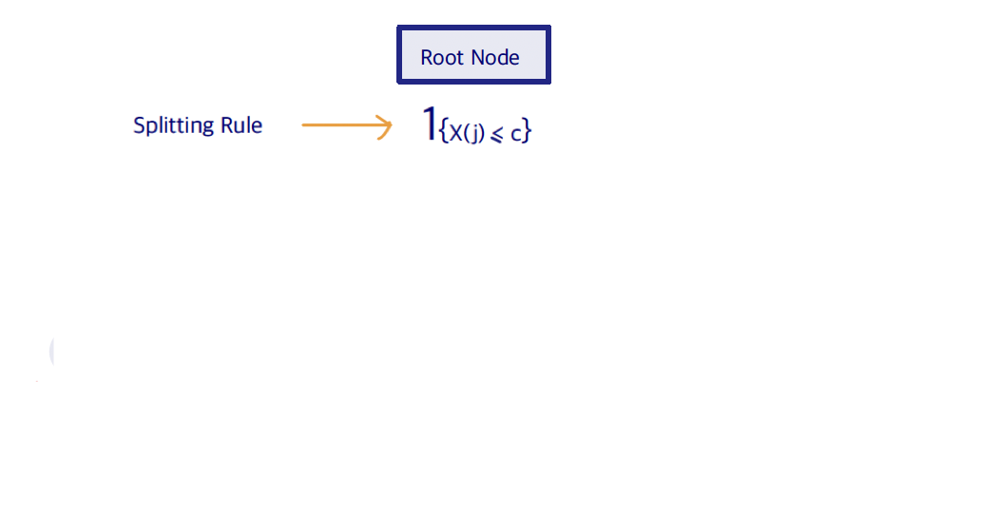
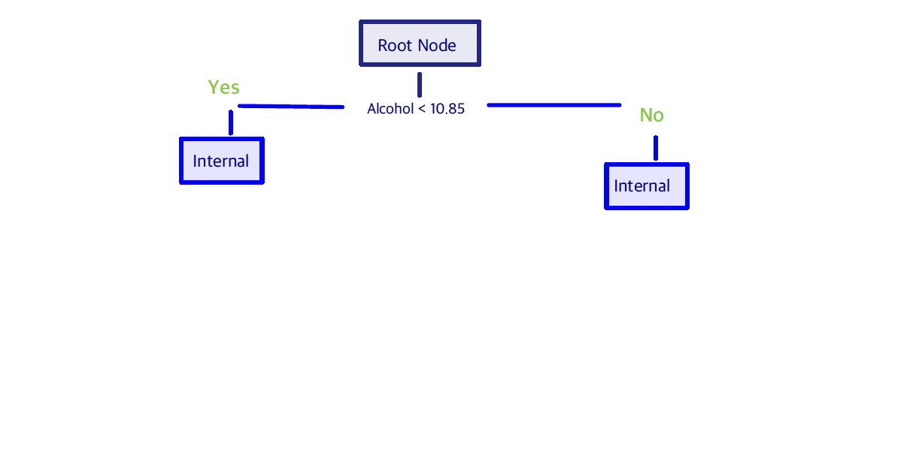
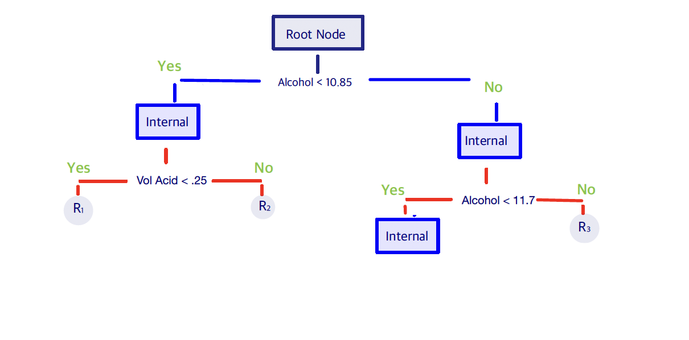
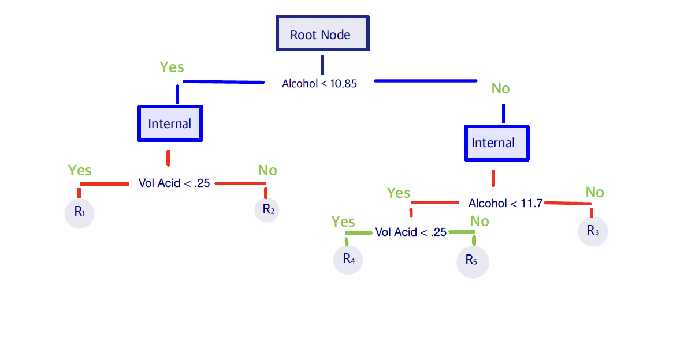
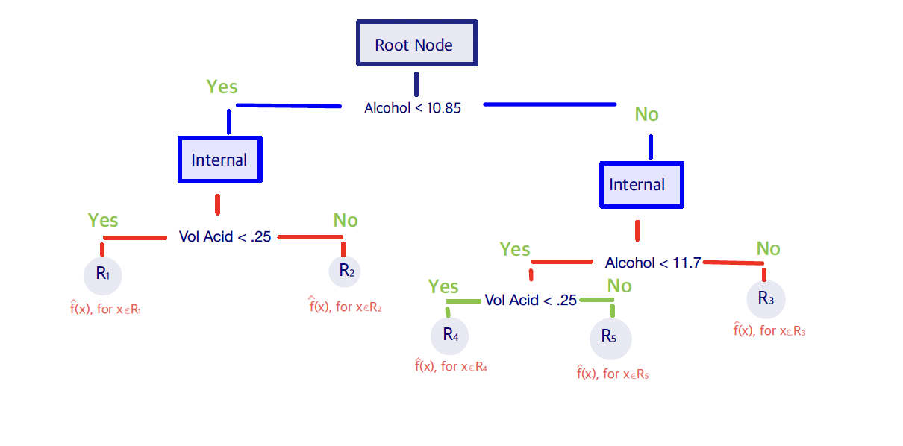

5.1 Single-Tree Building
As we discussed to build a single tree, one needs to recursively partition the predictor space. So, we start by initializing the root node and starting with all training data. Then, we choose a splitting rule consisting of a predictor \(X^{(j)}\) and a constant \(c\) that we use to split the data in the node: \[\mathbf{1}_{\{X^{(j)} \leq c\}}\]




We denote a node by \((t)\), the children nodes by \((t_L, t_R)\). The split will consist of the pair (var \(j\), value \(s\)), and in the end we have the leaves or terminal nodes.

When we stop, we predict each terminal node using within-node data. Every leaf node (i.e. a rectangle region \(R_m \in \mathcal{X}\)) is assigned a constant for regression tree \[\hat{f}(X) = \sum_m c_m \mathbf{1}_{\{X \in R_m\}}\]So, the natural questions that arise are the following:
- Where to split the tree?
- When to stop?
- How to predict the response at each leaf node?
5.1.1 Prediction at Leaf Nodes
As we saw before, each leaf node corresponds to region
5.1.2 Split Criterion
Finding the best partition in terms of minimum sum of squares is computationally infeasible which means that we need to use a greedy algorithm find the minimum. So, we start with all the data at the root, and the using a split variable \(j\) and a split point \(s\), we obtain the following two half planes:
\[R_1 (j,s) = \bigl\{X| X_j \leq s \bigr\} \quad \text{ and } \quad R_2 (j,s) = \bigl\{X| X_j > s \bigr\} \]
Then, we need to find the splitting variable \(j\) and split point \(s\) that solve
\[\min_{j,s} \Bigl[ \min_{c_1} \sum_{x_i \in R_1(j,s)} (y_i - c_1)^2 + \min_{c_2} \sum_{x_i \in R_2(j,s)} (y_i - c_2)^2 \Bigr]\]
For any choice of \(j\) and \(s\), the inner minimization is solved by:
\[ \hat{c}_1 = \text{ave} \Bigl(y_i | x_i \in R_1(j,s) \Bigr) \, \text{ and } \hat{c}_2 = \text{ave} \Bigl(y_i | x_i \in R_2(j,s) \Bigr)\]
For each splitting variable, the determination of the split point \(s\) can be done quickly. So, the determination of the best pair is feasible.
The process we discuss above can be summarized in the following way: for each split, we define a split criterion \(\Phi(j,s)\) e.g., we may consider the deduction of RSS for regression. By construction, regression trees are built in a top-down greedy fashion:
Start with the root and consider
a. all possible variables \(j=1, \ldots, p\) and
b. all possible split values,
c. and pick the best split, that is the one having the best \(\Phi\) value.
Now, the data are divided into the left node and right node.
Repeat this procedure in each node.
Split Criterion \(\Phi(j, s)\)
Deduction in RSS, if we split samples at node \(t\) into \(t_R\) and \(t_L\): \[ \Phi(j, s) = RSS(t) - \Bigl[RSS(t_R) + RSS(t_L) \Bigr] \] where \[RSS(t) = \sum_{x_i \in t} (y_i - c_t)^2, \quad \text{ where } \quad c_t = \text{AVE}\{y_i : x_i \in t\}\]
Note that \(\Phi(j, s)\) is always positive if we split the data into two groups (even randomly), unless the mean of the left node and the one of right node are the same.
Categorical Predictors
If we have a categorical predictor with \(m\) levels, then this can be naturally handled by the tree model. Having \(m\) levels implies that there will be \(2^{m-1}-1\) possible partitions of the \(m\) labels into two groups leading to a simplified computation for regression with a squared error loss:
Order the \(m\) levels by their mean values of \(Y\),
Split the categorical variable as if it were an ordered predictor, so there will only be \((m-1)\) potential splits.
Missing Predictor Values
As we discussed in the beginning, tree-based model algorithms cal also handle missing values automatically. In general, if we discard observations with missing values, this will lead to a serious depletion of the training set. However, we can start by ignoring missing value observations, and determine the split criteria using only non-missing observations. Once a split \((j,s)\) is found, we can “fill-in” the missing values. This can be done, for example, using imputation techniques.
Alternatively, we can find surrogate variables that can predict the binary outcome “\(X_j < s\)” and “\(X_j \geq s\)” using a one-split tree. We rank those surrogate variables along with the blind rule “go with majority”. Any observation that is missing \(X_j\) is then classified with the first surrogate variable, or if missing that, the second surrogate variable (or the blind rule) is used, and etc.
5.1.3 Single-Tree Pruning
So far we discussed how to predict the response in the leaves of the tree and we developed a split criterion. Thus, it remains to decide how and when we stop which also determines the size of the tree.
To clarify, when we refer to the “size of a tree” we refer to the number of splits a tree has. A large tree (with many splits) can easily over-fit the data, but on the other hand it may capture important structures that a smaller tree might miss. So, intuitively balancing the tree size and accuracy resembles the “loss + penalty” framework.
One possible approach is to split tree nodes only if the decrease in the loss (e.g. RSS) exceeds certain threshold, however this can be short-sighted, since what might seem as a useless split at this step might lead to a very good split below. So, we need to develop a different strategy: We construct a large tree which we then prune.
We start by growing a very large tree \(T_{\max}\):
until all terminal nodes are nearly pure, that is the variability of the points in that node is small.
or when the number of data in each terminal node is less than certain threshold;
or when the tree reaches a certain size.
The size of the initial tree is not critical as long as the tree is sufficiently large.
Notation
Subtree \(T'\prec T\): any tree that can be obtained by pruning \(T\), i.e. by collapsing all its internal nodes.
Branch at node \((t)\): \(T_t\)
For any subtree \(T \prec T_{\max}\) define the complexity cost \[R_{\alpha}(T) = R(T) + \alpha|T|,\] where \(R(T)\) is the RSS for the regression tree \(T\), \(|T|\) is the tree size, i.e. the number of leaf nodes, and \(\alpha >0\) is the (penalty) cost of adding a split. Then, our goal is to find the value of \(\alpha\) that minimizes the complexity cost. Or, in other words, we want to pick the best subtree that minimizes the cost \[\begin{align*} T(\alpha) &= \arg\min_{T\preceq T_{\max}} R_{\alpha}(T) \\ &= \arg\min_{T\preceq T_{\max}} \Bigl[ R(T) + \alpha|T|\Bigr] \end{align*}\]
The Optimal subtree \(T^{*}(\alpha)\) is defined to be the smallest one among all \(T(\alpha)\)’s, that is
\[R_{\alpha}(T^{*}(\alpha)) = \min_{T\preceq T_{\max}} R_{\alpha}(T)\]
\[T^{*}(\alpha) \preceq \text{ any } T(\alpha).\]
where \(T^{*}(\alpha)\) is unique.
Note that for a pair of leaf nodes \((t_L, t_R)\), there exists \(\alpha^{*}\), such that
For any \(\alpha \geq \alpha^*\), we would like to collapse them to just node \(t\);
For any \(\alpha \leq \alpha^*\), we prefer to keep the two leaf nodes.
That is, \(\alpha^{*}\) is the maximal price we would like to pay to keep that split. In a similar way, we can extend this calculation to compute the maximal price we would like to pay to keep a branch \(T_t\). For any non-leaf node \(t\), we need to compute the maximal price we would like to pay for keeping the whole branch \(T_t\), focusing only on samples at node \(t\). So,
The cost for keeping a branch \(T_t\): \[R_{\alpha}(T_t) = R(T_t) + \alpha |T_t|\]
The cost for cutting a branch \(T_t\): \[R_{\alpha}(\{t\}) = R(\{t\}) + \alpha \]
So, we calculate the difference between the two costs: \[\alpha^{*} = \frac{R(\{t\}) - R(T_t)}{|T_t|-1}\] This implies that if the given \(\alpha > \alpha^*\), then it is too expensive to keep this branch and we would like to cut the whole branch and make \(t\) a leaf node.
The main disadvantage of this approach is that if we need to search all possible sub-trees of \(T_{\max}\), then this is computationally intense. However, this is not necessary. Below we introduce the Weakest Link Pruning algorithm that finds and removes the least important branches of a large tree step-by-step to produce a sequence of smaller simpler trees. Specifically:
Weakest Link Pruning Algorithm
Start with \(T_0=T_{\max}\) and \(\alpha_0=0\).
For any non-leaf node \(t\), \[\alpha(t) = \text{ the maximal price you would pay to keep } T_t \]
\(\alpha_1 = \min_t \alpha(t)\)
The corresponding non-terminal node \(t_1\) is called the weakest link.Cut the branch at \(t_1\).
Update the maximal price for each non-leaf node (we only need to recompute the maximal price for nodes that are the parents/grandparents of \(t_1\)).
Find \(\alpha_2\) and cut the branch at the 2nd weakest link.
Keep doing this until we get to the root.
This algorithm generates a Solution Path in the following sense:
\[ T_{\max} = T_0 \succ T^{*}(\alpha_1) \succ T^{*}(\alpha_2) \succ \ldots \succ \{\text{root node}\}\] \[0=\alpha_0 <\alpha_1 <\alpha_2 < \ldots\] All possible values of \(\alpha\) are grouped into \((m+1)\) intervals \[\begin{align*} I_0 &= [0, \alpha_1)\\ I_1 &= [\alpha_1, \alpha_2)\\ \vdots &\\ I_m &= [\alpha_m, \infty) \end{align*}\] where all \(\alpha \in I_i\) share the same optimal subtree \(T^{*}(\alpha_i)\).
Tuning of the hyper-parameter \(\alpha\)
We can use \(K\)-Fold Cross validation to tune \(\alpha\) – the hyper-parameter in the pruning algorithm above. Therefore, we can start by fitting a very large tree \(T_{\max}\) and compute \(I_0, I_1, \ldots, I_m\) as above. Then, we can set \[\begin{align*} \beta_0 &= 0\\ \beta_1 &= \sqrt{\alpha_1 \alpha_2}\\ \vdots &\\ \beta_{m-1} &= \sqrt{\alpha_{m-1} \alpha_m}\\ \beta_m &= \infty \end{align*}\] where each \(\beta_j\) is a typical value for its interval \(I_j\).
To perform the \(K\) for cross-validation, we divide data into \(K\) groups and repeat \(k=1, \ldots, K\). On each data set, except for the \(k\)-th group, we fit a full model and determine the optimal subtrees: \[T_0 \succ T^{*}(\beta_1) \succ \ldots \succ T^{*}(\beta_m) \succ \{\text{root node} \}\] We then compute the prediction error on the \(k\)th group for each of the tree models. We finish by producing the CV plot over different \(\alpha\) values and pick the optimal \(\alpha\) via \(\alpha_{\min}\) or \(\alpha_{1se}\).